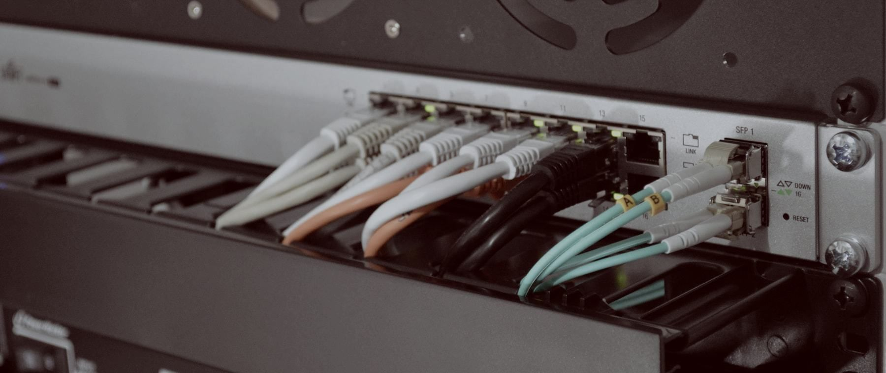
Insights
Technical briefs,
not press releases.
Three content types under one index: technical briefs written to help an evaluator make a decision, company announcements, and the exhibitions where we can be found.
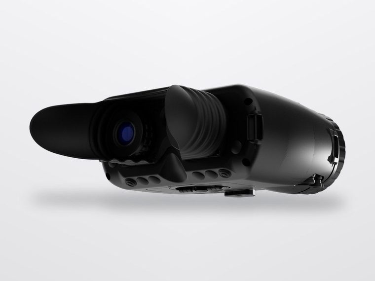
TECHNICAL BRIEFCooled against uncooled thermal imaging: choosing by mission profile
A cooled detector buys you range and thermal sensitivity, and costs you cool-down time, power, acoustic signature and a finite compressor life. An uncooled detector starts instantly and runs for years. Neither is better; they answer different questions. This brief sets out the four mission characteristics that decide which one belongs in your requirement.
Request this brief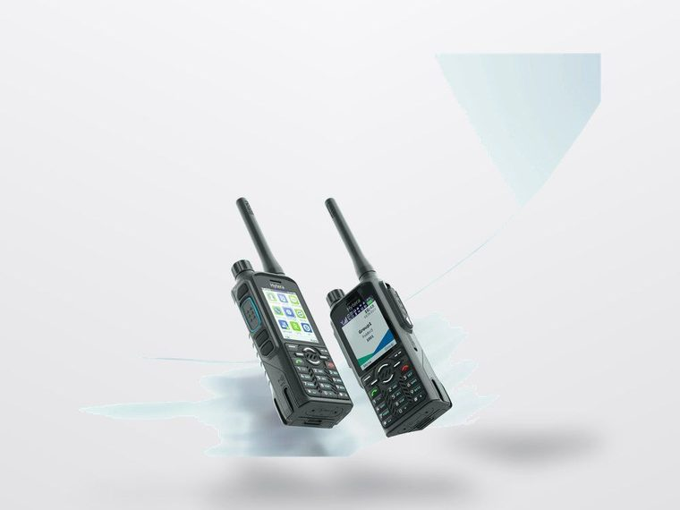
TECHNICAL BRIEFDMR, TETRA and broadband push-to-talk: selecting a formation architecture
Three bearers, three cost structures, three failure modes. The decision is rarely about audio quality and almost always about coverage geometry, subscriber count, data requirement and what happens when the network is contested. We work through the selection in the order a formation communications officer would.
Request this brief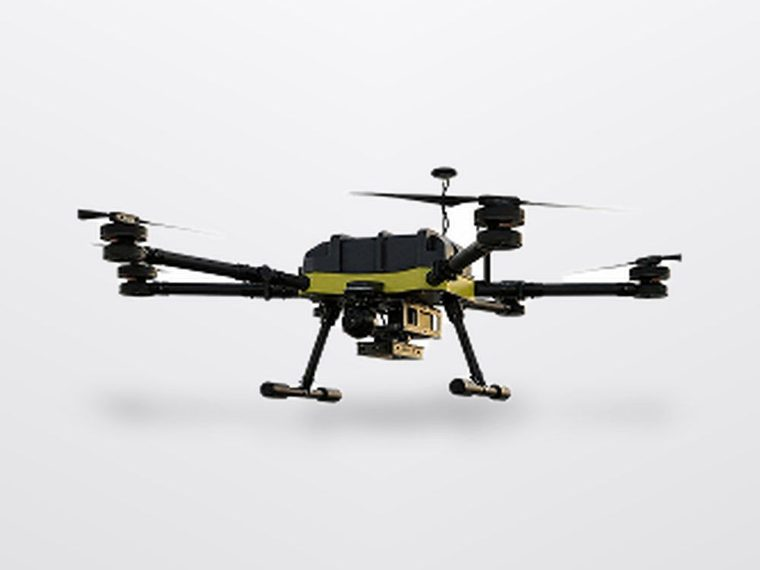
TECHNICAL BRIEFCounter-UAS: why detection, identification and defeat are three procurements
A system that detects but cannot positively identify will generate engagements against friendly and civil traffic. A system that can defeat but not identify is worse. Treating counter-UAS as one line item is the most common specification error we see, and the easiest to correct at requirement stage.
Request this brief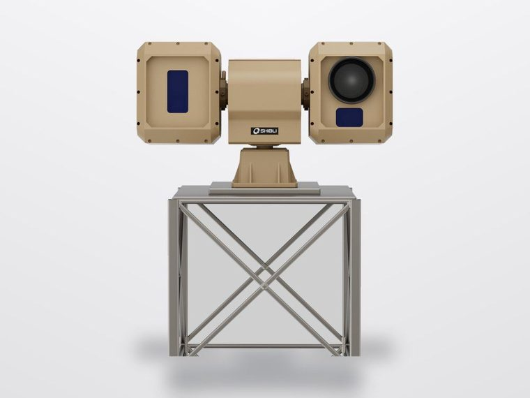
TECHNICAL BRIEFSpecifying a border surveillance system: sensor mix, coverage geometry and sustainment
Coverage is a geometry problem before it is a sensor problem. Mast height, terrain masking, overlap and the revisit interval you can tolerate set the sensor count; the sensor class then follows. Sustainment at a remote fixed site decides whether the system is still working in year three.
Request this brief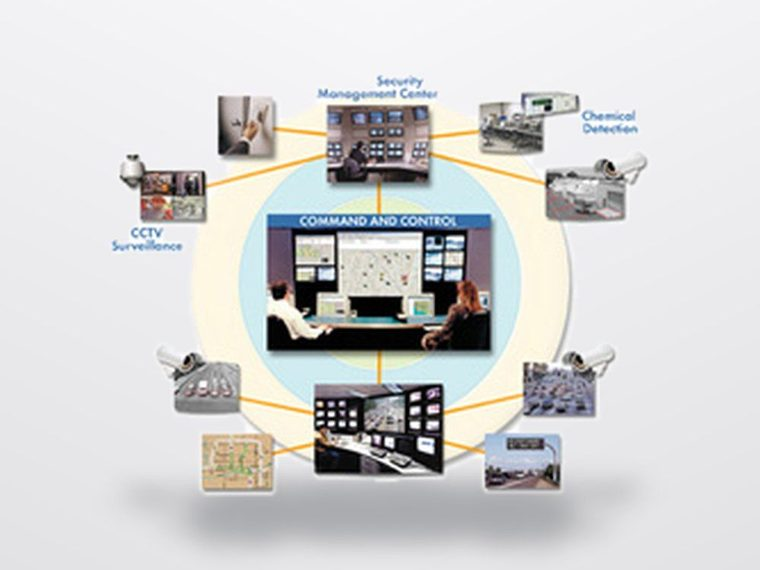
TECHNICAL BRIEFBuilding a managed security operations capability: in-house against managed service
The question is not tooling. It is whether you can staff three shifts of trained analysts indefinitely, and what your detection coverage looks like at 0300 on a public holiday. We set out the staffing arithmetic that usually decides this, and the hybrid models that work when neither pure option fits.
Request this brief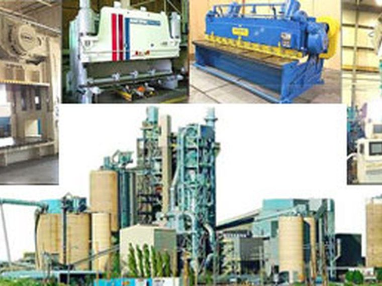
TECHNICAL BRIEFTransfer of technology: what genuinely transfers and what does not
A transfer arrangement that is not specified in detail before signature does not happen after it. Documentation, tooling, test equipment, process knowledge and the right to modify are separate items and are negotiated separately. This brief lists what to write into the arrangement, item by item.
Request this brief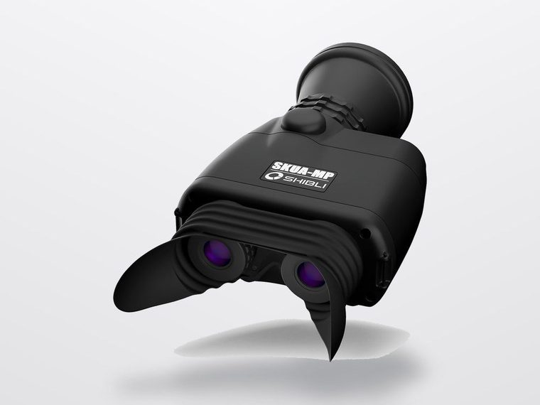
NEWSROOMShibli optronics portfolio added to the published catalogue
The FALCON, SKUA, GUARDIAN, TARSIER, ORCA, ERMINE and TERRIER families, together with the Nightrider driver sight and See King marine system, are now published with full manufacturer photography. Shibli manufactures in Islamabad, which shortens support lines and removes the export licensing step entirely.
Request this brief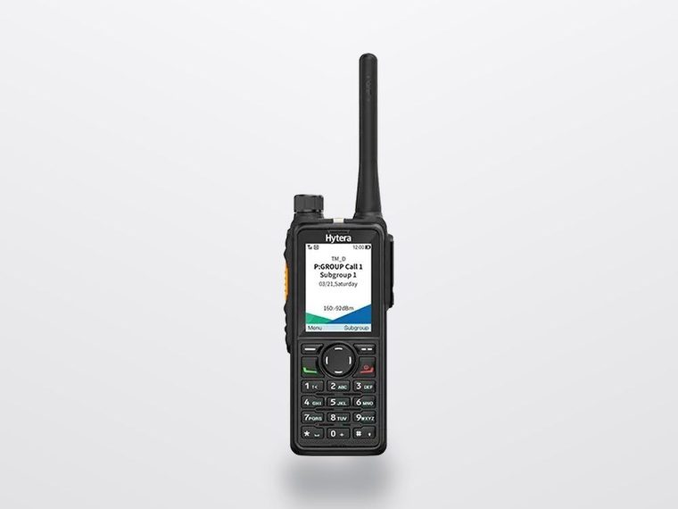
NEWSROOMHytera mission critical and business radio portfolio published in full
Thirty-seven Hytera models across DMR, TETRA, push-to-talk over cellular and dual-mode are now listed individually, from the HP78X professional portable through to the PT890Ex intrinsically safe TETRA radio and the DS-6250S trunking base station.
Request this brief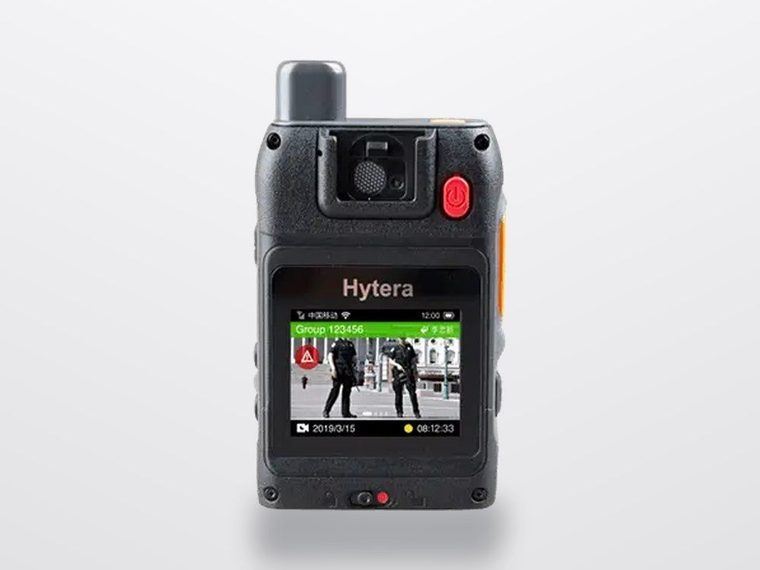
NEWSROOMSafe city and secure document capability extended
SUNMI, ASY Anti-forgery, Genuine Printing, Everbridge and REDtone Digital Services join the partner network, extending the portfolio across business IoT terminals, anti-counterfeiting, high-security printing, critical event management and managed connectivity.
Request this brief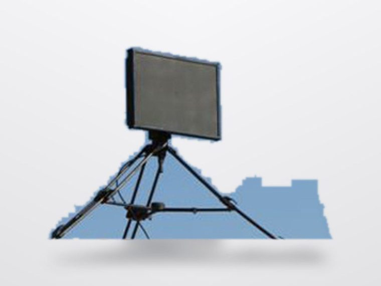
EVENTSIDEAS, Karachi
The International Defence Exhibition and Seminar is the principal defence exhibition in Pakistan and the point in the year where most manufacturer conversations start. We attend with our optronics and communications principals. Stand number and dates are published ahead of each edition.
Request this brief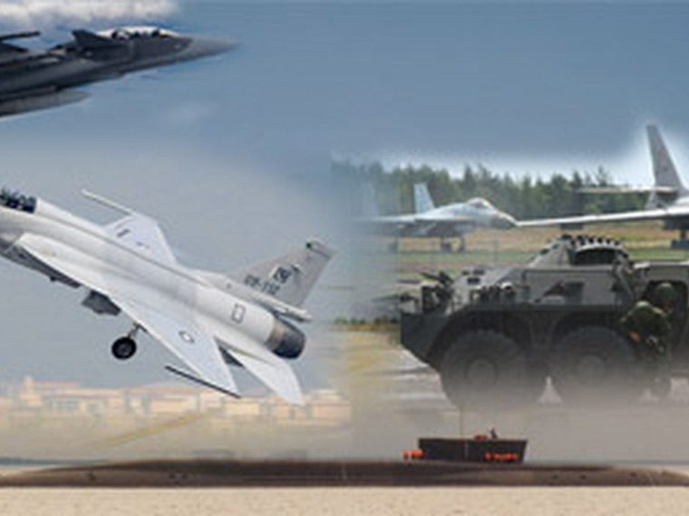
EVENTSDSA, Kuala Lumpur
Defence Services Asia is where we meet manufacturers looking for a route into Pakistan without establishing their own presence. If you are evaluating representation, this is the most efficient place to have that conversation in person.
Request this briefRegional critical communications forum
Mission critical communications events are where the DMR, TETRA and broadband roadmap questions get answered directly by the people building the infrastructure. We attend with our communications principals.
Request this briefFull briefs on request
Each technical brief runs to 700 to 1,200 words and is authored and attributed to a named engineer. Ask for any of them by title and we will send the full text; there is no form and no registration.

Contact
Tell us the requirement.
Send us a specification, a tender reference or a description of the operational problem. We will respond with a technical assessment and a route to source it.